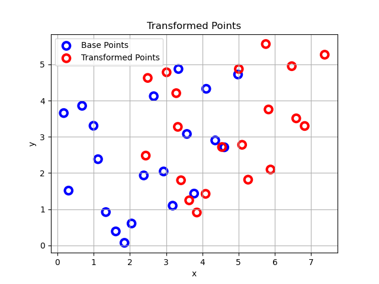

Figure 1: set of base point.

Figure 1: both sets of points.
Figure 1: set of base point.
Figure 1: both sets of points.
Figure 1: trajectory of transformation.

Figure 1: Broyden, Fletcher, Goldfarb and Shanno from left to right.
Rosenbrock function is a non-convex function which its' global minima is inside a long narrow valley which is trivial to find, but converging to the global minima inside that valley is a difficault task. \[f(x,y) = b(y-x^2)^2 + (a-x)^2\] where \(a\) and \(b\) are constants. The global minima is at \((a,a^2)\). It is mostly used as a benchmark for optimization algorithms.

Figure 2: Rosenbrock function
Some Optimizers in PyTorch such as Conjugate Gradient and LBFGS require a closure function to be passed to them. A closure function is a function that at first clears the gradients, computes the loss, and reevaluates the function.
def closure():
optimizer.zero_grad()
loss.backward()
return loss.item()
In order to be able to use the optimizers implemented in pytorch to minimize a function, we have to redefine that function as a class like we do for different Neural Networks in PyTorch.
class Rosenbrock(nn.Module):
def __init__(self, a, b):
super(Rosenbrock, self).__init__()
# Initializing the Rosenbrock function
self.a = a
self.b = b
# Optimization parameters are randomly initialized and
# defined to be a nn.Parameter object.
self.x = torch.nn.Parameter(torch.Tensor([-1.0]))
self.y = torch.nn.Parameter(torch.Tensor([2.0]))
def forward(self,):
# Here is the function that is being optimized
return (self.x - self.a) ** 2 + self.b * (self.y - self.x ** 2) ** 2
Note the difference between how we define constants and optimization variables.
Then the optimizer can be initialized like this:
optimizer = torch.optim.LBFGS(model.parameters(), lr=0.1, max_iter=5000)
Here is the gif of the convergence steps:

Figure 3: Convergence Steps (wait for it)